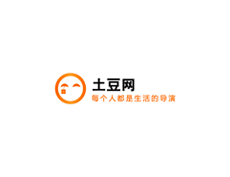

首页>合作企业
合作企业
阿里巴巴
腾讯视频
土豆网
北京葡萄藤
阿里巴巴
阿里巴巴
腾讯视频
土豆网
北京葡萄藤
阿里巴巴
北京葡萄藤
阿里巴巴

土豆网公司成立于1998年11月， 是目前中国最大的互联网综合服务提供商之一，也是中国 服务用户最多的互联网企业之一。成立10多年以来，腾讯一直秉承一切以用户价值为依归的 经营理念，始终处于稳健、高速发展的状态。2004年6月16日，腾讯公司在香港联交所主板 公开上市（股票代号700）。
土豆是中国最早和最具影响力的网络视频平台，是中国网络视频行业的领军品牌。其前身土豆网于2005年4月15日
正式上线，是全球最早上线的视频网站之一。2014年1月，“土豆网”正式更名为“土豆”，标志着土豆进入品牌发展
的新阶段。
“每个人都是生活的导演”是土豆从创立第一天始的价值观。土豆相信年轻人的想象力、创造力，相信土豆的平台能
帮助年轻人创造出更多，更好的影像作品，来表达对自己、生活和这个时代的看法。同时，土豆提倡尊重“每个人”的
个性，尊重每个人自主地选择自己的生活，成为自己成长的导演。
2012年3月12日，优酷股份有限公司(NYSE: YOKU) (“优酷”) 和土豆股份有限公司 (NASDAQ: TUDO) (“土豆”)
共同宣布，优酷和土豆将以100%换股的方式合并。2012年8月20日，优酷土豆合并方案获双方股东大会高票批准通过，
优酷土豆集团公司正式诞生。2013年4月，优酷土豆集团宣布进入“集团BU化”运营阶段，提出“优酷更优酷，土豆更
土豆”的发展战略。
2013年2月，杨伟东成为土豆总裁，宣布打造土豆“成为中国年轻人最喜爱的视频网站”，并明确土豆“成为中国
最具影响力的青年文化品牌”的愿景，确立了土豆“青春、个性、自主、有趣”的品牌定位，土豆全面进入2.0阶段。
通过年轻化的内容、年轻化的产品技术和年轻化的UGC/PGC生态三个方面来全面推动土豆2.0战略。
2014年3月土豆推出“4+1”战略。其中“4”代表的是土豆在内容方面更专注动漫、音乐、韩国娱乐、时尚四个
垂直文化领域。而“1”则代表土豆推出的“一个频道”战略，基于“频道主”和“订阅者”两个视角全方位架构跨屏
和线上线下体验系统，并结合用户体验、商业模式、运营机制等环节，提出了5个“一”规划。
根据第三方调研公司艾瑞的数据，优酷土豆集团在PC端和移动端全平台各项数据持续占据视频行业绝对领先优势，
截止2014年3月，土豆每月独立访问用户数量增长到2.43亿。 2013年土豆在移动端的增长也非常迅猛，2013年三季度，
土豆移动端获得了高速增长，月均覆盖用户较当年3月增长11倍，平均增长率超过40%；月均视频播放量增长23倍，月
平均增幅达60%。